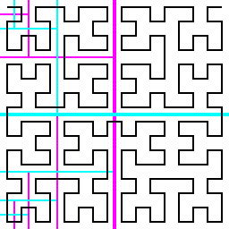

ヒルベルト曲線を用いた二分探索木について
はしがき
二分探索木は線型の（一次元の直線状に並べることができる）データを扱うのに適したデータ構造で、たとえば Map a b といった構造を実装するためにもちいられます。さて Map a b は一般に a から b を探索することは効率的にできる一方、 b から a を探索することは不得手です。これは (a, b) といった二次元のデータというものは、一般に並べると直線ではなく表になるためです。そこで二次元の表を一次元の直線に変換してから扱う方法として空間充填曲線を用いるものがあります。ここではヒルベルト曲線を扱う方法を紹介します。
(2021-10-31)
ヒルベルト曲線とは
空間充填曲線と呼ばれる曲線のひとつで、たとえば以下のような形状をしています。またこれが再帰的に繰り返されます。
プログラムでは以下のように平面上の座標 (x, y) をとって直線上の座標に写す関数として定義することができます。
curve :: Integral a => a -> Ratio a -> Ratio a -> Ratio a
curve n x y
| n < 0 = error "n must be greater than or equal to 0."
| x < 0 = error "x must be greater than or equal to 0."
| x >= 1 = error "x must be less than 1."
| denominator (x / (1 % 2^n)) /= 1 = error "denominator x must be a divisor of 2^n."
| y < 0 = error "y must be greater than or equal to 0."
| y >= 1 = error "y must be less than 1."
| denominator (y / (1 % 2^n)) /= 1 = error "denominator y must be a divisor of 2^n."
| n == 0 = 0
| n > 0 && x < 1 % 2 && y < 1 % 2 = curve (n - 1) (y * 2) (x * 2) / 4
| n > 0 && x < 1 % 2 && y >= 1 % 2 = curve (n - 1) (x * 2) (y * 2 - 1) / 4 + 1 % 4
| n > 0 && x >= 1 % 2 && y < 1 % 2 = curve (n - 1) (m - y * 2) (m - (x * 2 - 1)) / 4 + 3 % 4
| n > 0 && x >= 1 % 2 && y >= 1 % 2 = curve (n - 1) (x * 2 - 1) (y * 2 - 1) / 4 + 2 % 4
where m = 1 - 1 % 2^(n-1)
たとえば上記の例ですと、つぎのように一辺が 2⁴ の長さの正方形の座標に順序を与えることができます。
> let xys :: [(Int, Int)]
| xys = map fst $ List.sortBy (\a b -> compare (snd a) (snd b))
| [((x, y), curve 4 (x % 16) (y % 16)) | x <- [0..15], y <- [0..15]]
|
> print xys
[(0,0),(1,0),(1,1),(0,1),(0,2),(0,3),(1,3),(1,2),(2,2),(2,3),(3,3),(3,2),(3,1),(2,1),(2,0),(3,0),(4,0),(4,1),(5,1),(5,0),(6,0),(7,0),(7,1),(6,1),(6,2),(7,2),(7,3),(6,3),(5,3),(5,2),(4,2),(4,3),(4,4),(4,5),(5,5),(5,4),(6,4),(7,4),(7,5),(6,5),(6,6),(7,6),(7,7),(6,7),(5,7),(5,6),(4,6),(4,7),(3,7),(2,7),(2,6),(3,6),(3,5),(3,4),(2,4),(2,5),(1,5),(1,4),(0,4),(0,5),(0,6),(1,6),(1,7),(0,7),(0,8),(0,9),(1,9),(1,8),(2,8),(3,8),(3,9),(2,9),(2,10),(3,10),(3,11),(2,11),(1,11),(1,10),(0,10),(0,11),(0,12),(1,12),(1,13),(0,13),(0,14),(0,15),(1,15),(1,14),(2,14),(2,15),(3,15),(3,14),(3,13),(2,13),(2,12),(3,12),(4,12),(5,12),(5,13),(4,13),(4,14),(4,15),(5,15),(5,14),(6,14),(6,15),(7,15),(7,14),(7,13),(6,13),(6,12),(7,12),(7,11),(7,10),(6,10),(6,11),(5,11),(4,11),(4,10),(5,10),(5,9),(4,9),(4,8),(5,8),(6,8),(6,9),(7,9),(7,8),(8,8),(8,9),(9,9),(9,8),(10,8),(11,8),(11,9),(10,9),(10,10),(11,10),(11,11),(10,11),(9,11),(9,10),(8,10),(8,11),(8,12),(9,12),(9,13),(8,13),(8,14),(8,15),(9,15),(9,14),(10,14),(10,15),(11,15),(11,14),(11,13),(10,13),(10,12),(11,12),(12,12),(13,12),(13,13),(12,13),(12,14),(12,15),(13,15),(13,14),(14,14),(14,15),(15,15),(15,14),(15,13),(14,13),(14,12),(15,12),(15,11),(15,10),(14,10),(14,11),(13,11),(12,11),(12,10),(13,10),(13,9),(12,9),(12,8),(13,8),(14,8),(14,9),(15,9),(15,8),(15,7),(14,7),(14,6),(15,6),(15,5),(15,4),(14,4),(14,5),(13,5),(13,4),(12,4),(12,5),(12,6),(13,6),(13,7),(12,7),(11,7),(11,6),(10,6),(10,7),(9,7),(8,7),(8,6),(9,6),(9,5),(8,5),(8,4),(9,4),(10,4),(10,5),(11,5),(11,4),(11,3),(11,2),(10,2),(10,3),(9,3),(8,3),(8,2),(9,2),(9,1),(8,1),(8,0),(9,0),(10,0),(10,1),(11,1),(11,0),(12,0),(13,0),(13,1),(12,1),(12,2),(12,3),(13,3),(13,2),(14,2),(14,3),(15,3),(15,2),(15,1),(14,1),(14,0),(15,0)]
ヒルベルト曲線にかぎりませんが、多くの空間充填曲線は上記のような離散的な曲線の極限をとって構成されます。プログラムで扱う場合にはこの離散的な曲線のまま扱うほうがなにかと都合がよいため、 2ⁿ の大きさの表を考えて、そのセルにヒルベルト曲線で順序をつけたうえで二分探索木で処理するようにします。まずは 2ⁿ の数値のみを扱うように構成し、ほかの値はハッシュ関数で 2ⁿ のハッシュ値に mapping して扱います。
さてこれにて二分探索木で (x, y) を扱うためには m = curve n (hash x) (hash y) を求めればよいことがわかりました。しかしこのままでは探索時にも (x, y) の両方が必要で、 x のみや y のみが与えられたときに探索する方法がわかりません。
ふたたびさきほどの表に向きあうと
ちょうど表の ½ の地点で縦横に分割するときれいに分かれます。さらに都合のよいことにこの曲線を直線になおしたとき、それぞれ ¼, ½, ¾ の位置になります。つまり x に基づいた探索では直線の ½ の位置を基準にし、 y に基づいた探索では直線の ¼, ¾ の位置を基準に探索すればよさそうです。さらにこれは再帰的に繰り返されます。なお途中で x と y の向きが変わる場合がありますので、それをシアンとマゼンタで塗り分けました。

表の x または y が与えられたとき、直線の区間 [p, q] に x や y を通過する点が存在するかを判定できればよさそうです。たとえば表の左上を (0, 0) 右下を (1, 1) とし、また直線も左上の端点が 0 右上の端点が 1 とすれば、 x = ¼ ならば [½, ¾] の区間は探索しなくてもよいと即座に判定できます。（※ ただし表も直線もそれぞれ座標がとりうる値は [0, 1)² および [0, 1) というふうに右端の端点を含まないことに注意）
この直観をコードになおすと以下のようになります。
vertical :: Integral a => a -> Ratio a -> Ratio a -> Ratio a -> Bool
vertical n x p q
| n < 0 = error "n must be greater than or equal to 0."
| x < 0 = error "x must be greater than or equal to 0."
| x >= 1 = error "x must be less than 1."
| denominator (x / (1 % 2^n)) /= 1 = error "denominator x must be a divisor of 2^n."
| p < 0 = error "p must be greater than or equal to 0."
| p >= 1 = error "p must be less than 1."
| denominator (p / (1 % 2^(n*2))) /= 1 = error "denominator p must be a divisor of 2^(n*2)."
| q < 0 = error "q must be greater than or equal to 0."
| q >= 1 = error "q must be less than 1."
| denominator (q / (1 % 2^(n*2))) /= 1 = error "denominator q must be a divisor of 2^(n*2)."
| p > q = error "p must be less than or equal to q."
| p == 0 && q == 1 - 1 % 2^(n*2) = True
| n == 0 = True
| n > 0 && x < 1 % 2 && p >= 0 && q < 1 % 4 = horizontal (n - 1)
(max 0 (min m (x * 2)))
(r - max 0 (min r (q * 4)))
(r - max 0 (min r (p * 4)))
| n > 0 && x < 1 % 2 && p >= 1 % 4 && q < 1 % 2 = vertical (n - 1)
(max 0 (min m (x * 2)))
(max 0 (min r (p * 4 - 1)))
(max 0 (min r (q * 4 - 1)))
| n > 0 && x < 1 % 2 && p < 1 % 2 && q < 1 = horizontal (n - 1)
(max 0 (min m (x * 2)))
(r - max 0 (min r (q * 4)))
(r - max 0 (min r (p * 4)))
|| vertical (n - 1)
(max 0 (min m (x * 2)))
(max 0 (min r (p * 4 - 1)))
(max 0 (min r (q * 4 - 1)))
| n > 0 && x < 1 % 2 && p >= 1 % 2 && q < 1 = False
| n > 0 && x >= 1 % 2 && p >= 0 && q < 1 % 2 = False
| n > 0 && x >= 1 % 2 && p >= 3 % 4 && q < 1 = horizontal (n - 1)
(m - max 0 (min m (x * 2 - 1)))
(r - max 0 (min r (q * 4 - 3)))
(r - max 0 (min r (p * 4 - 3)))
| n > 0 && x >= 1 % 2 && p >= 1 % 2 && q < 3 % 4 = vertical (n - 1)
(max 0 (min m (x * 2 - 1)))
(max 0 (min r (p * 4 - 2)))
(max 0 (min r (q * 4 - 2)))
| n > 0 && x >= 1 % 2 && p >= 0 && q >= 1 % 2 = vertical (n - 1)
(max 0 (min m (x * 2 - 1)))
(max 0 (min r (p * 4 - 2)))
(max 0 (min r (q * 4 - 2)))
|| horizontal (n - 1)
(m - max 0 (min m (x * 2 - 1)))
(r - max 0 (min r (q * 4 - 3)))
(r - max 0 (min r (p * 4 - 3)))
where m = 1 - 1 % 2^(n-1)
r = 1 - 1 % 2^((n-1)*2)
horizontal :: Integral a => a -> Ratio a -> Ratio a -> Ratio a -> Bool
horizontal n y p q
| n < 0 = error "n must be greater than or equal to 0."
| y < 0 = error "y must be greater than or equal to 0."
| y >= 1 = error "y must be less than 1."
| denominator (y / (1 % 2^n)) /= 1 = error "denominator y must be a divisor of 2^n."
| p < 0 = error "p must be greater than or equal to 0."
| p >= 1 = error "p must be less than 1."
| denominator (p / (1 % 2^(n*2))) /= 1 = error "denominator p must be a divisor of 2^(n*2)."
| q < 0 = error "q must be greater than or equal to 0."
| q >= 1 = error "q must be less than 1."
| denominator (q / (1 % 2^(n*2))) /= 1 = error "denominator q must be a divisor of 2^(n*2)."
| p > q = error "p must be less than or equal to q."
| p == 0 && q == 1 - 1 % 2^(n*2) = True
| n == 0 = True
| n > 0 && y < 1 % 2 && p >= 1 % 4 && q < 3 % 4 = False
| n > 0 && y >= 1 % 2 && p >= 3 % 4 && q < 1 = False
| n > 0 && y >= 1 % 2 && p >= 0 && q < 1 % 4 = False
| n > 0 && y < 1 % 2 && p >= 0 && q < 3 % 4 = vertical (n - 1)
(m - max 0 (min m (y * 2)))
(r - max 0 (min r (q * 4)))
(r - max 0 (min r (p * 4)))
| n > 0 && y < 1 % 2 && p >= 1 % 4 && q < 1 = vertical (n - 1)
(max 0 (min m (y * 2)))
(r - max 0 (min r (q * 4 - 3)))
(r - max 0 (min r (p * 4 - 3)))
| n > 0 && y < 1 % 2 && p < 1 % 4 && q >= 3 % 4 = vertical (n - 1)
(m - max 0 (min m (y * 2)))
(r - max 0 (min r (q * 4)))
(r - max 0 (min r (p * 4)))
|| vertical (n - 1)
(max 0 (min m (y * 2)))
(r - max 0 (min r (q * 4 - 3)))
(r - max 0 (min r (p * 4 - 3)))
| n > 0 && y >= 1 % 2 && p >= 0 && q < 1 % 2 = horizontal (n - 1)
(max 0 (min m (y * 2 - 1)))
(max 0 (min r (p * 4 - 1)))
(max 0 (min r (q * 4 - 1)))
| n > 0 && y >= 1 % 2 && p >= 1 % 2 && q < 0 = horizontal (n - 1)
(max 0 (min m (y * 2 - 1)))
(max 0 (min r (p * 4 - 2)))
(max 0 (min r (q * 4 - 2)))
| n > 0 && y >= 1 % 2 && p < 3 % 4 && q >= 1 % 4 = horizontal (n - 1)
(max 0 (min m (y * 2 - 1)))
(max 0 (min r (p * 4 - 1)))
(max 0 (min r (q * 4 - 1)))
|| horizontal (n - 1)
(max 0 (min m (y * 2 - 1)))
(max 0 (min r (p * 4 - 2)))
(max 0 (min r (q * 4 - 2)))
where m = 1 - 1 % 2^(n-1)
r = 1 - 1 % 2^((n-1)*2)
二分探索木に応用してみる
さてこれで二分探索におけるいろいろなアルゴリズムやデータ構造が利用可能になりました。平衡二分探索木にするなどはまた別途するとして、素朴な二分探索木が動作するかを確かめてみます。
class Hash8 a where
hash8 :: a -> Word.Word8
instance Hash8 Int.Int8 where
hash8 = fromIntegral
instance Hash8 Word.Word8 where
hash8 = id
data Relation a b =
Leaf
| Branch
[(a, b)]
(Ratio Int.Int64)
(Relation a b)
(Relation a b)
deriving (Eq, Ord, Read, Show)
hash :: (Hash8 a, Hash8 b) => a -> b -> Ratio Int.Int64
hash x y =
curve 8
(fromIntegral (hash8 x) % 2^8)
(fromIntegral (hash8 y) % 2^8)
empty :: Relation a b
empty =
Leaf
singleton :: (Hash8 a, Hash8 b) => a -> b -> Relation a b
singleton x y =
Branch
[(x, y)]
(hash x y)
Leaf
Leaf
insert :: (Hash8 a, Hash8 b, Ord a, Ord b) => a -> b -> Relation a b -> Relation a b
insert x y = insert' (hash x y) where
insert' p Leaf =
Branch [(x, y)] p Leaf Leaf
insert' p (Branch xys q l r) =
case compare p q of
LT -> Branch xys q (insert' p l) r
EQ -> Branch (List.insert (x, y) xys) q l r
GT -> Branch xys q l (insert' p r)
lookupX :: (Hash8 a, Ord a) => a -> Relation a b -> [b]
lookupX = \x r -> lookupX' 0 (1 - 1 % 2^16) x r [] where
lookupX' _ _ _ Leaf =
id
lookupX' p q x (Branch xys z l r) =
if vertical 8 (fromIntegral (hash8 x) % 2^8 :: Ratio Int.Int64) p q then
lookupX' p (max p (z - 1 % 2^16)) x l
. ((map snd (filter (\xy -> x == fst xy) xys)) ++ )
. lookupX' (min q (z + 1 % 2^16)) q x r
else
id
lookupY :: (Hash8 b, Ord b) => b -> Relation a b -> [a]
lookupY = \x r -> lookupY' 0 (1 - 1 % 2^16) x r [] where
lookupY' _ _ _ Leaf =
id
lookupY' p q y (Branch xys z l r) =
if horizontal 8 (fromIntegral (hash8 y) % 2^8 :: Ratio Int.Int64) p q then
lookupY' p (max p (z - 1 % 2^16)) y l
. (map fst (filter (\xy -> y == snd xy) xys) ++)
. lookupY' (min q (z + 1 % 2^16)) q y r
else
id
動作確認
GHCi で動作確認をしてみます。今回はわかりやすい例として square(x)=x² を考えます。 sqrt(x)=√x として square⁻¹=sqrt です。たとえば square(4)=16 で sqrt(16)=4 です。
> :set +m
> let square :: Relation Int.Int8 Int.Int8
| square = insert 4 16 (insert 3 9 (insert 0 0 (insert 1 1 (singleton 2 4))))
|
> print square
Branch [(2,4)] (27 % 32768) (Branch [(1,1)] (1 % 32768) (Branch [(0,0)] (0 % 1) Leaf Leaf) Leaf) (Branch [(3,9)] (35 % 32768) Leaf (Branch [(4,16)] (461 % 32768) Leaf Leaf))
> lookupX 0 square
[0]
> lookupX 1 square
[1]
> lookupX 2 square
[4]
> lookupX 3 square
[9]
> lookupX 4 square
[16]
> lookupY 0 square
[0]
> lookupY 1 square
[1]
> lookupY 4 square
[2]
> lookupY 9 square
[3]
> lookupY 16 square
[4]